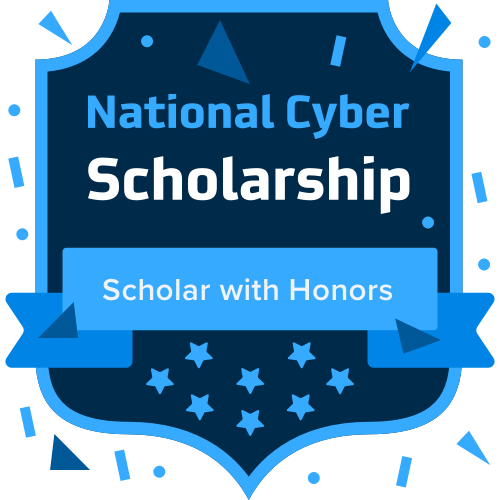
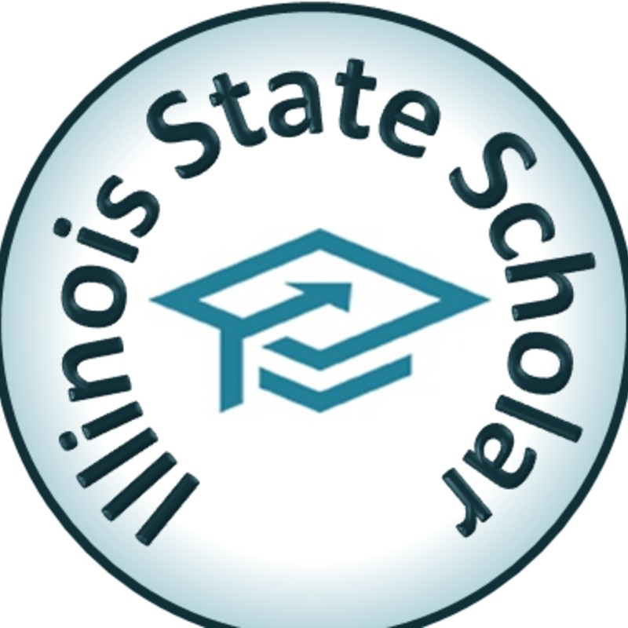
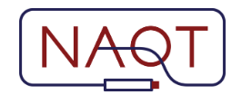

National Merit Scholar

To win the award, a student must go through several stages which include qualification, performance and submitting accomplishments. First, a student must qualify by scoring in the top 1% of test takers in their state. Based on these scores, approximately 16,000 students are selected nationally as semifinalists. To advance, they must submit a list of accomplishments, including a high school transcript, a personal essay and a letter of recommendation. Finally, 7,600 students nationwide are chosen as National Merit award winners. Winners receive a $2,500 scholarship along with academic recognition.
James Scholar

"The gifted undergraduate student who is seeking the challenge of advanced and unusual academic opportunities and the maximum freedom in course selection will find such opportunity in the James Scholar Program in Engineering. In addition to the various honors sections, courses, and special educational opportunities made available by the various departments of the college, the program administers several engineering honors courses. These courses are designed to bring together James Scholars from throughout the college to study various interdisciplinary subjects.
The James Scholar Program is voluntary and therefore enrolls superior students who are actively seeking unusual academic challenges. It strives to interact with each student on an individual basis; its foundation lies in the student's interest and academic goals." - Siebel School of Computing and Data Science Website
National Cyber Scholar With Honors
"Due to their hard work, dedication and progress this year, the students... have earned the National Cyber Scholarship Foundation (NCSF) Scholar with Honors status for 2023. This means they have qualified as a National Cyber Scholar based on their performance in the CyberStart gamified learning platform, and gone on to complete the 2023 Cyber Foundations Academy, completing the SANS Foundations course and earning the industry-recognized GIAC Foundational Cybersecurity Technologies (GFACT) certification.
These students have shown true excellence in their cybersecurity learning journey. Cybersecurity is a fascinating and challenging field, but not everyone has the tenacity and analytical capacity to be exceptional. They have demonstrated they have what it takes, and that with continued study they could have a place in this industry. All of our Scholars with Honors should be incredibly proud of their achievement." - NCSF Website
HsHacks Winner

"HSHacks is a 12-hour, in-person hackathon" - HSHacks
Won Best Overall out of 120+ participants.
Illinois State Scholar
"The State Scholar Program publicly and personally identifies graduating high school seniors who possess superior academic potential. Students from nearly every high school in Illinois compete in the program... The Illinois State Scholar program is awarded to high school seniors based on ACT or SAT test scores and the sixth semester class size and unweighted class rank and Grade Point Average (GPA)" - ISS Website
Matthews Scholar
"Incoming freshmen are selected for consideration for the Matthews Scholars program based upon their having demonstrated academic excellence and leadership skills as well as involvement in extracurricular and community service activities." - UIUC website
Desmos Global Graphing Art Contest Finalist
Selected as a finalist from over 10,000 graphs for Desmos' Graphing Art Competition. Blended math and programming concepts with art to create an interactive, gamified graph from over 1,000 equations.
Social Sciences and Art History Knowledge
I was ranked top 20 nationally for social sciences and visual art knowledge, and I captained a quizbowl team that I led from the bottom of the region to 33rd place nationally.